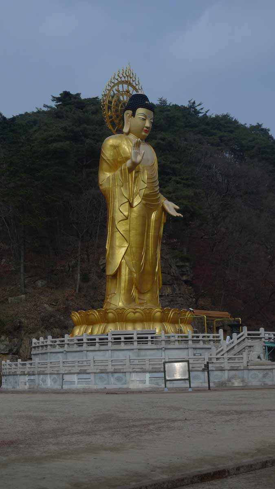
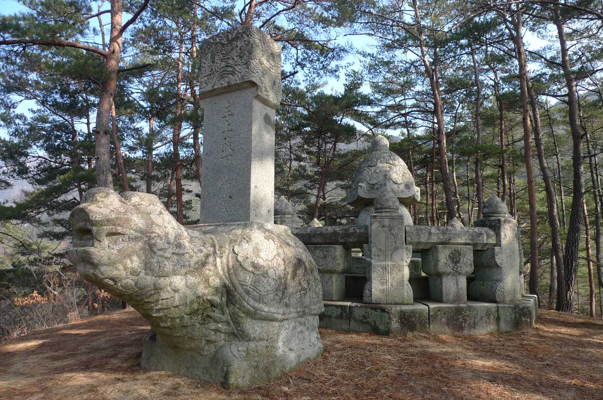

Trail to King’s placenta (태실) and SangHwan-Am (상환암) temple
This hike was primarily to visit King Sunjo’s (순조대왕) placenta burial site and the mountainside temple of SangHwan-Am (상환암).
There is another hiking description on this website titled “Munjangdae (문장대) short hike Eastern route” in which we visited
this same national park, Songnisan National park (속리산국립공원), where we climbed to one of the peaks called Munjangdae (문장대). On
this particular hike we entered the National park at the main entrance in the Southwest corner near to the famous BeopJuSa
(법주사) temple. The included photographs on this description page really show the progress of this hike and the beauty of the
location on this side of the mountain. To include a mountain peak in this hike would have necessitated an extremely early
start which is not the norm for Daejeon hikers.
BeopJuSa Temple (법주사)

We met at KAIST and drove to the location parking lot which services those visiting the temple named BeopJuSa (법주사) renowned
for its 33 meter standing bronze Buddha weighing in at 160 tons completed in 1990. Underneath this giant Buddha is a small
museum of Buddhist related relics and objects to tour if you don’t mind removing your shoes and walking on a cold floor. If
you prefer more ancient relics than a giant Buddha statue, there is the giant iron cauldron once used to cook rice for
hundreds of monks (cast in 720 AD), a massive bell and the usual restored temples for worship and paying respects to Buddha.
The complex itself which dates back to 553 AD once must have held hundreds of monks but these days is rather overrun by
hundreds of tourists each day.
Placenta monument but no placenta?
After our mandatory temple visit we began the hike on an easy trail that skirted an artificial lake with a dam. There was a
convenient wooden walkway around the lake that eventually led up to the trail that goes up to the placenta monument. This
trail was a very steep one that climbed up through some scenic woods soon leading us to the monuments that used to contain
the placenta of the King Sunjo (순조대왕). I say “ used to” because in 1927 the local Joseon governor – general had the placenta
jar containing the placenta remains sent to Seoul so in effect all that remains here today is the Stone Monument to mark
where the King’s placenta used to be buried.
Symbol of Longevity

You may think burying a placenta an odd thing to do but the practice in old times was limited to Royalty, usually future
Kings. The placenta and umbilical cord would be placed in a placenta pot called the 태항아리 and buried in a chamber called the
태실. 태 (tae) comes from the word 탭반 which means placenta, 항아리 (hangari) is a traditional style pot while 실 (shil) means room
but in this meaning chamber. When King Sunjo (순조대왕). became the 23rd King during Joseon times he had the monument
magnificently decorated. Beside the circle shaped stone monument is a stone tortoise monument as well. The tortoise was a
symbol of longevity in both Korea and China and therefore was often used during burials. Alas, a long life was not in store
for King Sunjo (순조대왕) who had become king at only 10 years old and died at 44 after a somewhat turbulent reign as Korea’s
royalty strongly resisted interference from the outside modern world during the early part of the 19th Century.
Wrong way
After having lunch in this historical location we decided to venture a short cut over to the temple that we could see in the
distance at a height not too much above the height of the placenta monument we were currently at. Unfortunately that turned
out to be a mistake. We had discovered a trail leading up above the monument so we were encouraged that it would be possible
to do a short cut path to the Sanghwan-am (상환암) temple. We walked down to the saddle and then up a steep trail through the
woods until we came to a quite large rock. We explored our options to bypass this obstacle and our leader even climbed up
over a portion of the massive boulder but reported that beyond there was just a large cliff. At that we were forced to
abandon this route, went back to the saddle and down to the actual trail leading up to the mountain temple.
SangHwan-Am temple (상환암)
This trail to SangHwan-Am (상환암) temple began at a moderate grade. Initially, there were steps of wood that lead up to the
temple that is precariously situated against the mountain rock. Later the steps were carved into the rock in places because
there was simply no room for wooden steps. SangHwan-Am (상환암) temple is less visited than the popular BeopJuSa(법주사) temple
(the latter being conveniently located near the park entrance) but an architectural wonder built as an extension to the
boulders on the mountainside which would not pass any safety standards in most Western countries. After our exploration we
returned to the path down the mountain that led to a road and then the temple complex where the car parking lot was located.
We arrived back at KAIST around 6:00 pm later than usual but it was a long drive.
Summary of hike
This is an interesting hike with some wonderful views of the distant mountains. The SangHwa-Am (상환암) Temple site is well
worth visiting as is the stone monument to King Sunjo's placenta (순조댕왕). Both are unique monuments exemplifying the rare
pristine beauty still available in rural Korea incorporated with its long proud history. The trail in places was steep up to
the placenta but the steep portions of the route up to SangHwa-Am (상환암) temple were on steps placed there to make the climb
much easier. I would recommend this as a fine day hike in the winter when there are fewer visitors to this popular mountain.